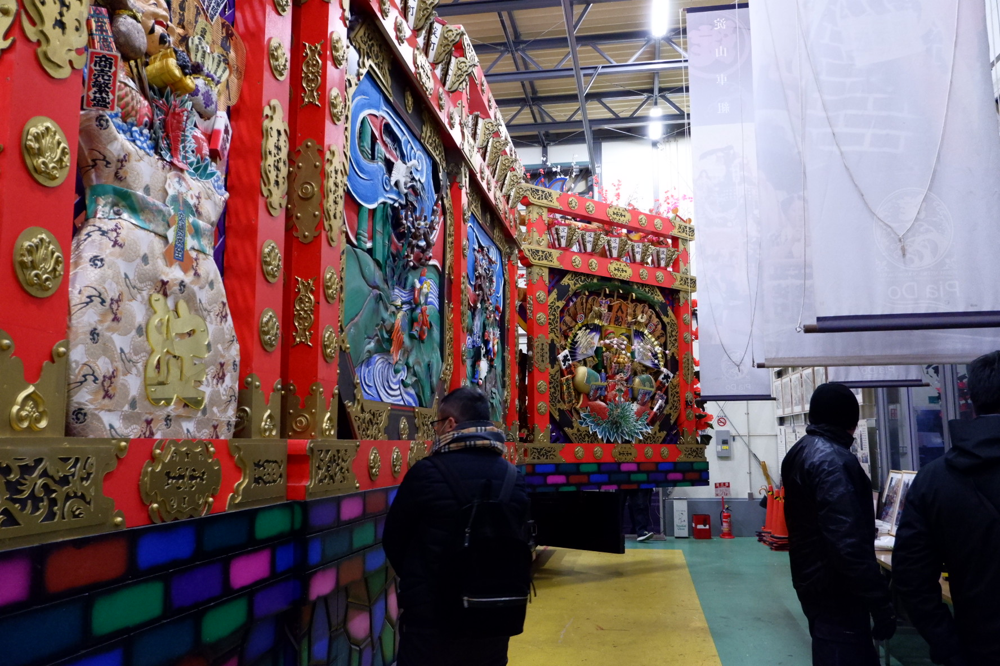
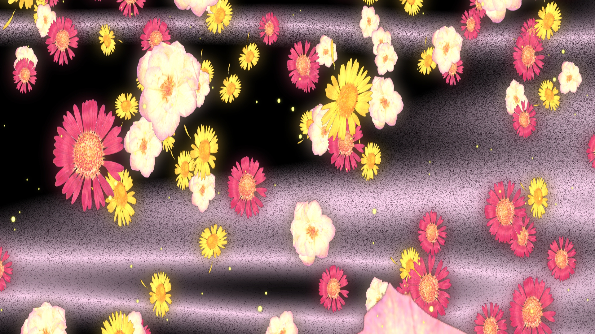
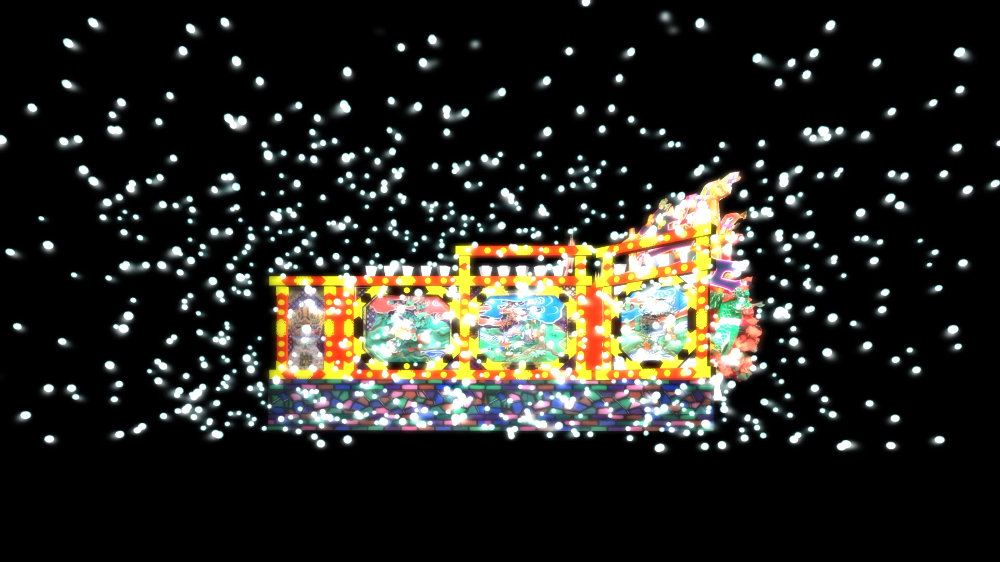
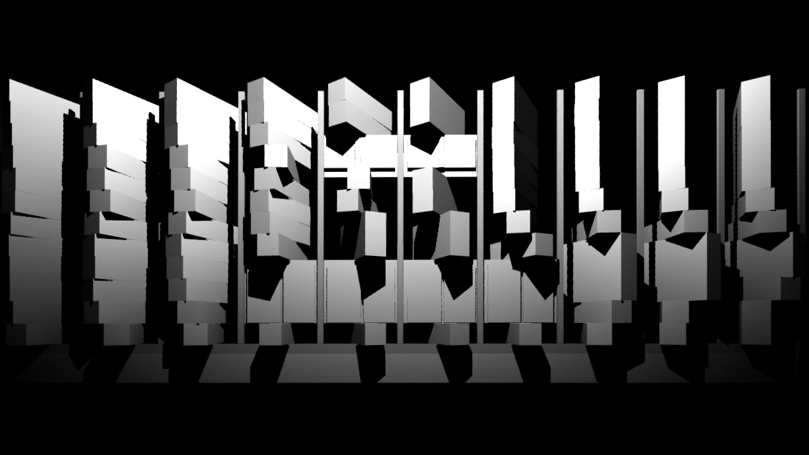

WS & Projection Mapping 八戸
八戸三社大祭は、毎年夏に行われる八戸地方の歴史ある伝統行事。その年ごとに趣向を凝らしてつくられる山車の行列が市街を運行する。
この魅力を冬にも発信するため、山車小屋へのプロジェションマッピング企画された。
普段は山車の製作場であるその小屋が持つ大きな壁面に、立体的な錯視映像を投影。事前に行われたプログラミングワークショップにて子供達が製作した八戸を題材にしたアニメーション登場させた。



